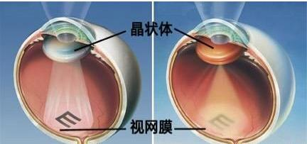
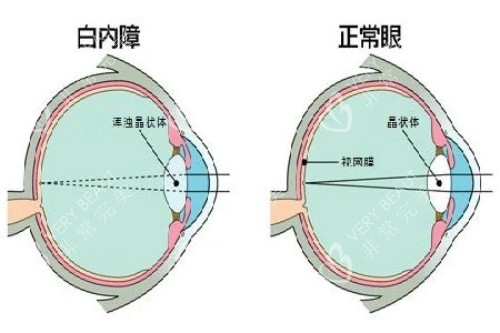

白内障
危险程度
中风险
就医建议
及时就医检查
最佳就医时间
发现视力模糊及时就医
什么是白内障？
白内障是一种常见的眼科疾病，主要表现为眼球晶状体发生混浊，导致光线无法正常通过晶状体到达视网膜，造成视力下降。它是全球致盲的主要原因之一，但通过及时的手术治疗可以恢复视力。
关键特征：
- 晶状体混浊或浑浊
- 视力进行性下降
- 视物模糊不清
- 对比敏感度降低
白内障分类
年龄相关性白内障
最常见类型，与年龄增长相关，通常发生在60岁以上人群
先天性白内障
出生时就存在的白内障，可能与遗传因素或妊娠期感染有关
外伤性白内障
由眼部外伤导致的晶状体混浊，可能急性或慢性发展
并发性白内障
由其他眼部疾病或全身性疾病引起的白内障
图示说明：
图1：白内障发病机制示意图

上图展示了白内障的发病机制
图2：正常眼睛与白内障对比图

上图展示了正常眼睛与白内障的对比
主要症状
视觉症状
视力模糊
视物不清，像隔着毛玻璃
重影
看物体出现重叠现象
畏光
对强光特别敏感
夜视能力差
夜间视物更加困难
色觉变化
色彩感知改变
颜色显得暗淡或发黄
对比度降低
物体轮廓不清晰
进展特点
早期
轻微视力模糊，可能需要经常更换眼镜
中期
视物模糊加重，影响日常生活
晚期
严重视力下降，需要手术治疗
治疗方法
手术治疗
- 超声乳化手术
- 人工晶状体植入
- 小切口白内障手术
术前准备
- 全面眼科检查
- 人工晶状体度数测量
- 基础疾病控制
术后护理
- 按时使用眼药水
- 避免剧烈运动
- 定期复查
预防建议
防护紫外线
外出佩戴防UV墨镜
均衡饮食
补充维生素A、C和E
定期检查
每年进行眼科检查
戒烟限酒
保持健康生活方式
推荐医院
北京同仁医院
北京市东城区东交民巷1号
010-58266699